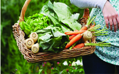

Upcoming Events
- Sunday Market
- Every Sunday come to Farmer’s Market
in Pawtucket, enjoy local farmers, food and music
1005 Main st
Pawtucket, RI
Sundays: 9am to 1 pm
- Music Concert
- We believe in community and bring local musician
to perform in our farms
June 5, 2013
- Community Yoga
- Every Sunday at Sunshine Farm we have
free yoga workshop, Either outdoor or Indoor
See more events and sunday market
Products
Sunshine farm offers Certified Organic eggs, grass-fed beef, pastured pork and seasonal offerings of vegetables, lamb and goat meat. We make our own Farmstead Cheese in our certified on farm dairy. We use 100% of our own goat and cow milk and make our cheese fresh on a daily basis. Whole sale accounts are welcome for cheese.
See all organic products.